Tecnología Superior Universitaria en Prevención del Delito y Seguridad Ciudadana
MANUAL DE USUARIO PASO A PASO (PARA PRINCIPIANTES)
Instalar Office desde cero
Unidad 1 · Instalación de software ofimático
Asignatura:
Competencias Digitales
Docente:
Mgtr. María del Carmen Salazar Torres
Unidad:
1 de 3
Curso / Paralelo:
Sección C
Tipo de documento:
Manual instructivo de uso.
Material de apoyo para seguir paso a paso; no es una tarea evaluada ni se entrega.
1. Instrucciones
Este es un manual pensado para quien nunca ha instalado un programa.
Empezamos desde encender la computadora y no damos nada por sabido. Cada captura lleva
flechas rojas que señalan exactamente dónde mirar y qué
escribir. No hay nada que entregar ni que rellenar: es solo para seguirlo mientras instalas.
Ve paso por paso, sin prisa: realiza una acción y recién pasa a la siguiente. Las pruebas se realizan en el laboratorio, nunca en el equipo real; al
terminar se restaura el snapshot de la máquina virtual. Calcule entre 30 y 45 minutos.
Cómo leer este manual. Las teclas del teclado se escriben así:
WindowsEnter. La flecha →
significa «y luego» (por ejemplo: haz clic → escribe → pulsa Enter). Los números que hay
que escribir en el programa aparecen así: 3.
2. Pequeño glosario (palabras que vamos a usar)
Clic: Presionar una vez el botón izquierdo del ratón (el mouse).
Doble clic: Presionar ese mismo botón dos veces seguidas y rápido.
Clic derecho: Presionar el botón derecho del ratón. Casi siempre abre un menucito con opciones.
Navegador: El programa para entrar a internet (Google Chrome o Microsoft Edge).
Barra de direcciones: La barra larga de arriba del navegador, donde se escribe la dirección de una página.
Menú Inicio: El menú que se abre al presionar la tecla Windows (abajo a la izquierda).
Barra de tareas: La barra de iconos que está abajo del todo de la pantalla.
PowerShell: Un programa de Windows con fondo azul oscuro donde se escriben órdenes con el teclado. No tiene botones.
Comando: Una línea de texto que se le da a PowerShell para que haga algo. Nosotros la vamos a copiar y pegar, no a escribir a mano.
Administrador: Permiso especial que Windows pide para instalar programas. Sin él, la instalación no puede ni empezar.
Copiar y pegar: Copiar es guardar un texto en la memoria (Ctrl+C); pegar es soltarlo donde quieras (Ctrl+V).
Ventana negra (consola): Una ventana sin botones donde todo se hace escribiendo números y pulsando Enter. Es la que vamos a usar.
Activar: Darle a Office una licencia para que funcione sin límites ni avisos.
3. Historias de usuario (para qué sirve esto)
Como estudiante que nunca ha instalado Office, quiero seguir pasos con imágenes,
flechas y números para no perderme en ningún momento.
Como usuario nuevo, quiero ver exactamente dónde hacer clic y qué número escribir
para no equivocarme ni entrar a una página falsa.
Como principiante, quiero reconocer la señal de que salió bien para quedarme tranquilo.
Antes de empezar. Esto se hace en la máquina virtual del
laboratorio, nunca en tu computadora personal. Al terminar la práctica se restaura el
snapshot y el equipo vuelve a quedar como estaba.
4. Manual paso a paso
Paso A. Encender la computadora y entrar a Windows
Presiona el botón de encendido una sola vez y suéltalo.
En una computadora de escritorio está en la torre (la caja grande).
En una laptop, arriba del teclado. Tiene dibujado este símbolo:
Espera sin tocar nada.
Verás luces y quizá un logo. Puede tardar uno o dos minutos. Es normal.
Aparece una pantalla con la hora (se llama pantalla de bloqueo). Presiona cualquier
tecla o haz clic para continuar.
Escribe tu contraseña o PIN y pulsa Enter.
Si tu equipo no pide contraseña, entra directo.
Ya estás dentro cuando ves el fondo de pantalla con iconos y, abajo, la barra de tareas.
Paso B. Abrir el navegador (Chrome o Edge)
El navegador es el programa para entrar a internet. Busca uno de estos dos iconos:
Google Chrome: un círculo de colores
(rojo, amarillo y verde) con un punto azul en el centro.
Microsoft Edge: una ola o remolino en tonos
azul y verde.
Mira en la barra de abajo (barra de tareas) o en el escritorio. ¿Ves uno de esos
iconos? Haz clic (o doble clic si está en el escritorio).
¿No lo encuentras? Presiona la tecla Windows del teclado
(la que tiene la ventanita ). Se abre el menú Inicio.
Escribe chrome (o edge) → arriba aparece el programa →
pulsa Enter.
El navegador se abre en una ventana grande. Listo para el siguiente paso.
Paso C. Entrar a la página del instalador
Busca la barra larga de arriba (barra de direcciones) y haz un clic dentro.
Si tenía texto, bórralo con la tecla Retroceso (la flecha de borrar, arriba a
la derecha del teclado).
Escribe exactamente esta dirección y pulsa Enter:
github.com/MariaDSalazar/instalador-office-isupol
Comprueba que arriba diga github.com y el nombre correcto.
Si te manda a descargar un .exe o el nombre es
distinto, cierra: es una copia falsa.
Baja con la rueda del mouse hasta el apartado «Forma 1 · Un solo comando».
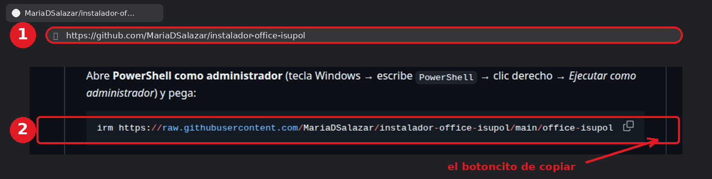
Figura 1. La página del instalador. Círculo 1: la barra de
direcciones, ahí escribes la dirección. Círculo 2: el recuadro oscuro con el
comando que copiaremos en el Paso D. La flecha señala el botoncito de copiar, que
aparece al pasar el mouse por encima.
Paso D. Copiar el comando
El comando es esta línea larga. No hace falta escribirla a mano, la
vamos a copiar entera:
Pasa el mouse por encima del recuadro oscuro de la página; en la esquina derecha
aparece un botoncito de copiar (dos cuadraditos). Haz clic ahí.
Si no aparece el botoncito, selecciona el texto con el mouse
arrastrando de principio a fin y presiona
Ctrl+C.
El comando ya está copiado, aunque no veas ningún cambio en la pantalla. Es normal.
No cierres el navegador todavía, por si hay que copiarlo de nuevo.
¿Qué hace ese comando?irm descarga el instalador
desde la página, y iex lo ejecuta. Es la misma forma que usa massgrave.dev.
El archivo viene del repositorio de la asignatura y descarga Office solo de los servidores
de Microsoft.
Paso E. Abrir PowerShell como administrador
Presiona la tecla Windows → escribe PowerShell.
Arriba aparece «Windows PowerShell». No pulses Enter todavía.
En el panel de la derecha haz clic en «Ejecutar como administrador».
Si no ves ese panel, haz clic derecho sobre «Windows PowerShell»
y elige esa misma opción del menú.
Es muy importante que sea la opción como administrador y no la normal: sin
esos permisos, la instalación no puede empezar.
Windows preguntará si permites cambios → haz clic en Sí.
Ese aviso azul es normal y sale siempre.
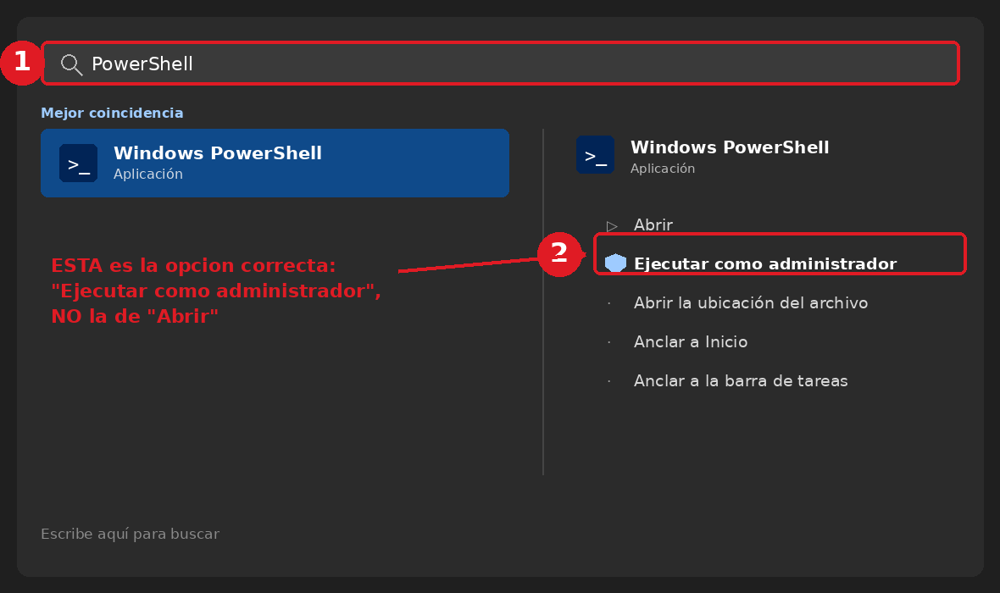
Figura 2. El menú Inicio tras escribir «PowerShell».
Recuadro 1: lo que escribiste. Recuadro 2: la opción que hay que elegir,
«Ejecutar como administrador». Si haces clic en «Abrir» se abre sin permisos y el
instalador no podrá continuar.
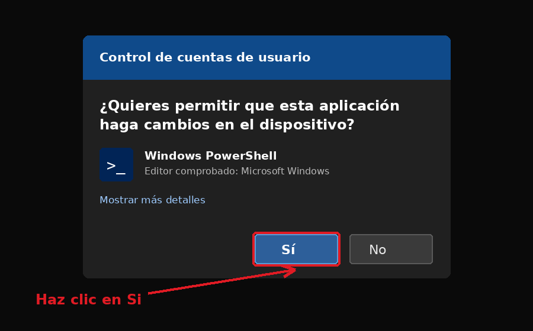
Figura 3. Este aviso es normal y sale siempre que un programa
necesita permisos de administrador. La flecha señala el botón Sí, que es el que
hay que pulsar.
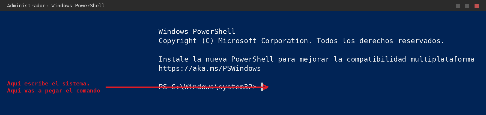
Figura 4. La ventana de PowerShell recién abierta. Fíjate en el
título de arriba: la palabra «Administrador» confirma que tiene los permisos
correctos. La flecha señala dónde vas a pegar el comando.
Si el título NO dice «Administrador», ciérrala y vuelve a
abrirla con la opción Ejecutar como administrador. Si sigues sin esos permisos, el
instalador te avisará en rojo y no podrá continuar.
Paso F. Pegar el comando y ejecutarlo
Haz clic derecho una sola vez dentro de la ventana azul. El comando aparece solo.
También sirve Ctrl+V.
En PowerShell el clic derecho pega directamente; es normal que no veas ningún menú.
Comprueba que el comando esté completo y que termine en | iex.
Pulsa Enter y espera unos segundos.
Aparece la portada con el nombre del Instituto y el menú de opciones.
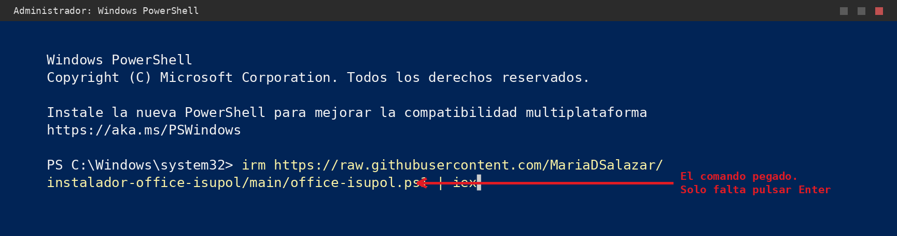
Figura 5. Así se ve el comando ya pegado, justo después de
PS C:\Windows\system32>. Es tan largo que la consola lo parte en dos
líneas: es normal. Solo falta pulsar Enter.
¿Sale un error en rojo y no aparece el menú? Lo más común es que
el comando se pegara a medias. Vuelve al Paso D, cópialo entero otra vez y repite. Si el
error habla de «ExecutionPolicy», usa la otra forma de instalar (sección 5).
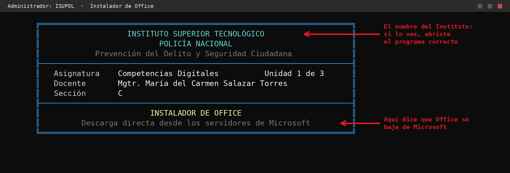
Figura 6. Lo primero que aparece tras pulsar Enter. Si ves el nombre
del Instituto y el título «INSTALADOR DE OFFICE», todo va bien.
Paso G. Leer la revisión del equipo
Antes de descargar nada, el programa revisa tu computadora.
Todo lo que esté en verde está bien. Si algo sale en rojo, se detiene y te explica
qué hacer.
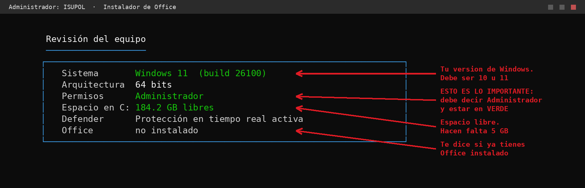
Figura 7. La tabla de revisión. Las flechas explican qué significa
cada línea. La más importante es Permisos: tiene que decir «Administrador» y
estar en verde.
Línea
Qué significa
Debe decir
Sistema
Qué versión de Windows tienes
Windows 10 o Windows 11
Arquitectura
Si tu Windows es de 32 o 64 bits. Se detecta solo
64 bits (lo normal)
Permisos
Si tiene permiso para instalar
Administrador, en verde
Espacio en C:
Cuánto espacio libre queda en el disco
Al menos 5 GB
Defender
Si el antivirus está encendido. Solo informativo
Cualquiera de las dos
Office
Si ya hay un Office instalado
Cualquiera de las dos
Paso H. Elegir qué Office quieres instalar
Debajo de la revisión aparece el menú, dividido en dos tablas.
Todo se elige escribiendo un número y pulsando Enter.
El ratón no sirve aquí.
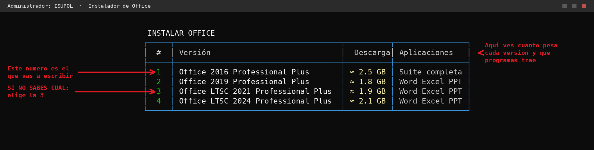
Figura 8. La primera tabla: las cuatro versiones que puedes instalar.
La primera columna es el número que vas a escribir. Si no sabes cuál elegir, la flecha
te señala la opción 3.
Número
Qué instala
Aplicaciones
1
Office 2016 Professional Plus
La suite completa
2
Office 2019 Professional Plus
Word, Excel, PowerPoint
3
Office LTSC 2021 Professional Plus
Word, Excel, PowerPoint
4
Office LTSC 2024 Professional Plus
Word, Excel, PowerPoint
La opción 1 instala además Access, Publisher y OneNote,
porque en esa versión Microsoft no permite elegir aplicaciones sueltas.
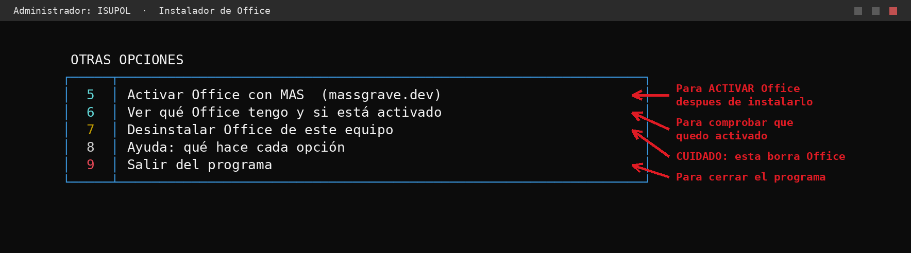
Figura 9. La segunda tabla: lo que no es instalar. Aquí está la
opción 5 para activar, la 6 para comprobar y la 9 para salir. Fíjate
en la advertencia de la opción 7.
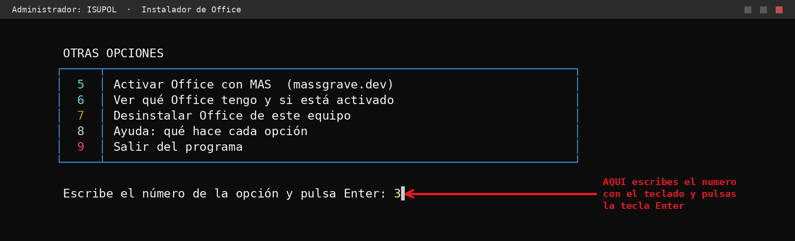
Figura 10. La última línea de la pantalla es donde escribes. La flecha
señala el sitio exacto: teclea el número y pulsa Enter.
Decide qué versión quieres con la tabla de arriba.
Si no sabes cuál, elige la 3. Es la más
usada y trae solo Word, Excel y PowerPoint.
Escribe ese número con el teclado. Aparecerá al final de la línea, en amarillo.
Pulsa Enter.
¿Te equivocaste de tecla? Si escribes una letra o un número que no
existe, el programa te avisa en rojo y te devuelve al menú. No pasa nada malo, puedes
volver a intentarlo las veces que quieras.
Paso I. Confirmar y esperar
El programa nunca instala nada sin preguntarte. Primero te enseña un
resumen para que compruebes que elegiste bien.
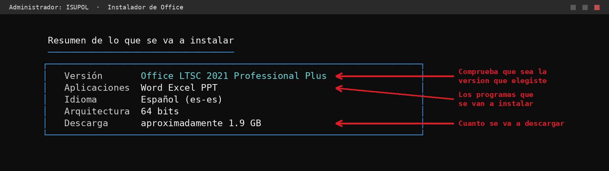
Figura 11. El resumen. Las flechas señalan las tres cosas que revisar:
la versión, los programas que trae y cuánto se va a descargar.
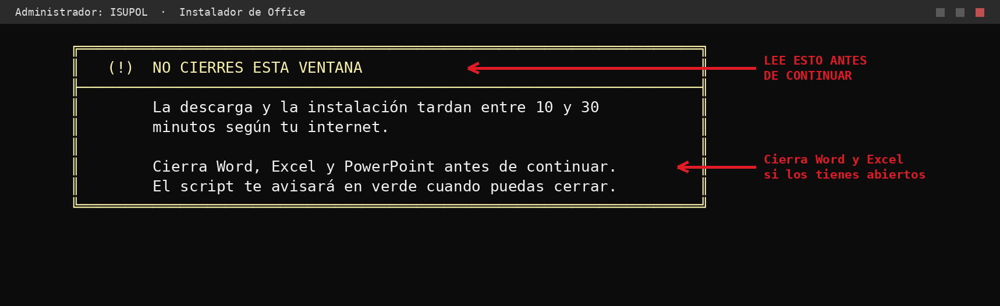
Figura 12. El aviso amarillo. Léelo entero antes de seguir: hay que
cerrar Word, Excel y PowerPoint si los tienes abiertos.
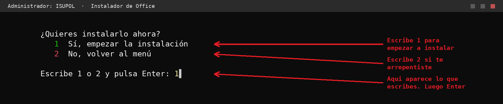
Figura 13. La confirmación. Aquí no se escribe «sí» ni «no»: se
escribe 1 para instalar o 2 para volver al menú.
Cierra Word, Excel y PowerPoint si los tienes abiertos.
Lee el resumen y comprueba que sea la versión correcta.
Escribe 1 → Enter para empezar.
No cierres la ventana azul. La descarga y la instalación tardan
entre 10 y 30 minutos según tu internet. Si la cierras a la mitad, Office queda instalado
a medias y hay que empezar de nuevo. El programa te avisará en verde cuando puedas
cerrar.
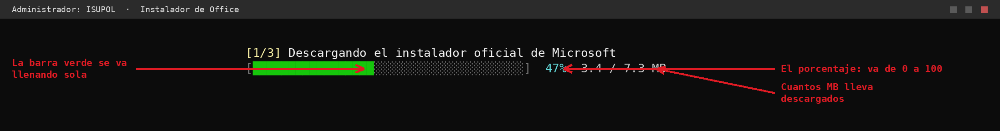
Figura 14. La barra de descarga. Se llena sola de izquierda a derecha.
Las flechas señalan el porcentaje (va de 0 a 100) y los megabytes bajados.
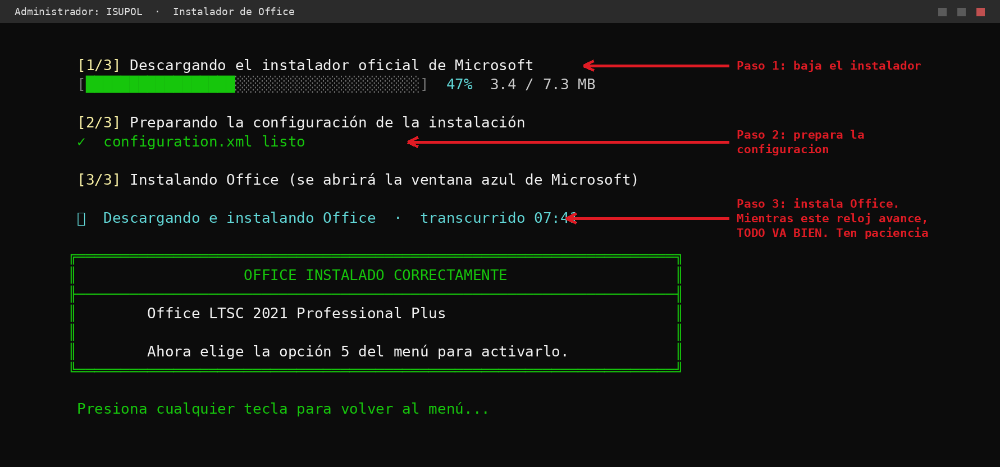
Figura 15. Los tres pasos. El más largo es el tercero. La flecha señala
el reloj: mientras ese número avance, todo va bien, aunque la pantalla parezca
detenida.
Se abrirá otra ventana azul de Microsoft con su propia barra de
progreso. Es normal, es el instalador oficial haciendo su trabajo. No la cierres tampoco.
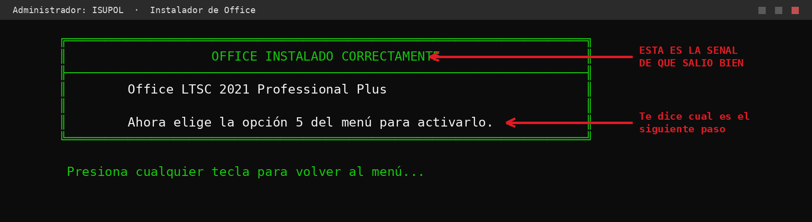
Figura 16.La señal de que salió bien: el cartel verde. Las
flechas señalan la confirmación y el siguiente paso. Si ves esto, Office ya está
instalado.
Paso J. Activar Office
Office ya está instalado, pero le falta la licencia. Desde el menú,
escribe 5.
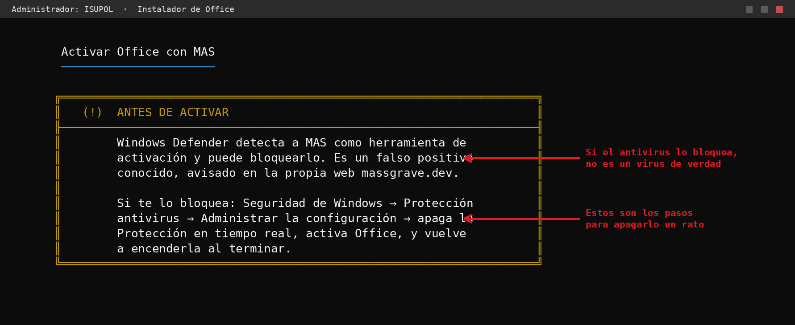
Figura 17. El aviso naranja sobre el antivirus. Las flechas señalan
las dos partes importantes: que no es un virus de verdad, y los pasos para apagar la
protección un rato si hiciera falta.
Por qué el antivirus se queja. Windows Defender marca
todas las herramientas de activación, aunque no sean dañinas. La propia página
massgrave.dev lo advierte. Si te lo bloquea: abre Seguridad de Windows →
Protección antivirus y contra amenazas → Administrar la configuración →
apaga Protección en tiempo real → activa Office →
vuelve a encenderla al terminar. No dejes el antivirus apagado.
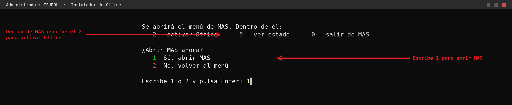
Figura 18. Ojo con esto: hay dos menús distintos. La flecha de abajo es
el 1 de nuestro programa (abrir MAS). La de arriba es el 2 que
escribirás dentro de MAS, que es otro menú.
En el menú escribe 5 → Enter.
Lee el aviso naranja del antivirus.
Escribe 1 → Enter para abrir MAS.
Se abre el menú de MAS, con opciones de colores.
Es otro programa distinto, con su propio menú. Ya no estás en el nuestro.
Con Office cerrado, escribe 2 → Enter.
El 2 de MAS es «Office». El 1 sería Windows, que aquí no toca.
Espera sin tocar nada hasta que aparezca una línea en verde. Office quedó activado.
Escribe 0 → Enter para salir de MAS.
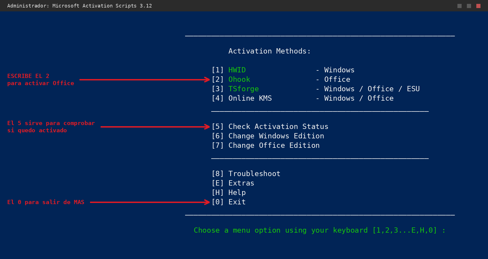
Figura 19. El menú de MAS. Está en inglés, pero solo necesitas tres
números: el 2 (Ohook — Office) para activar, el 5 para comprobar el estado
y el 0 para salir. El 1 es para Windows y aquí no toca.
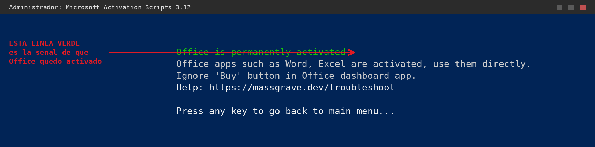
Figura 20. La señal de que salió bien: la frase en verde
«Office is permanently activated». Debajo, en gris, avisa de que Word y Excel ya
están activados y que puedes ignorar el botón «Buy» de Office.
Paso K. Comprobar que quedó activado
En nuestro menú escribe 6 → Enter.
Busca la línea LICENSE STATUS. Si pone ---LICENSED---,
está activado.
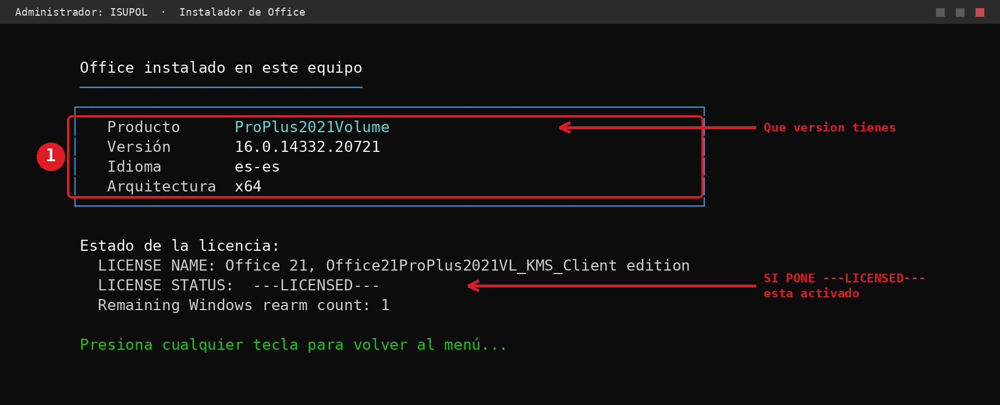
Figura 21. El recuadro muestra qué versión tienes instalada. La flecha
de abajo señala la línea que confirma la activación.
También puedes comprobarlo desde el propio Word: ábrelo → Archivo →
Cuenta. Debe decir que el producto está activado.
Paso L. Cerrar todo con calma
En el menú escribe 9 → Enter.
Presiona cualquier tecla cuando aparezca el mensaje verde de despedida.
Cierra la ventana de PowerShell con la X de la esquina de arriba a la derecha.
Cierra también el navegador con su X.
Si trabajaste en el laboratorio, restaura el snapshot al terminar.
5. Otra forma: descargar los archivos y hacer doble clic
Si el comando no funciona en tu equipo (por ejemplo, si sale un error de
«ExecutionPolicy»), puedes descargar los archivos y abrirlos directamente.
Archivo
Para qué sirve
Instalar-Office.cmd
Este es el que abres tú. Pide los permisos de administrador y arranca el otro.
office-isupol.ps1
Es el programa de verdad. No lo abras directamente, se abre solo.
En la página de GitHub haz clic en el botón verde Code → Download ZIP.
Abre la carpeta Descargas, haz clic derecho en el ZIP → Extraer todo.
Comprueba que Instalar-Office.cmd y office-isupol.ps1 estén
en la misma carpeta.
Haz doble clic en Instalar-Office.cmd y acepta el aviso de permisos.
A partir de aquí, sigue desde el Paso G de este manual.
¿No pasó nada al hacer doble clic? Windows bloquea los archivos
bajados de internet. Haz clic derecho sobre office-isupol.ps1 →
Propiedades → abajo marca Desbloquear → Aceptar, y vuelve a intentarlo.
6. Si algo sale mal
Lo que ves
Qué hacer
Un error rojo largo al pulsar Enter
El comando se pegó a medias. Vuelve al Paso D y cópialo entero otra vez.
«no se puede cargar el archivo… ExecutionPolicy»
Windows tiene bloqueada la ejecución de scripts. Usa la otra forma (sección 5).
«FALTAN PERMISOS DE ADMINISTRADOR»
Abriste PowerShell normal. Ciérralo y ábrelo con Ejecutar como administrador
(Paso E).
«SIN CONEXIÓN A INTERNET»
Revisa el cable o el WiFi. Hace falta internet para descargar Office de Microsoft.
«ESPACIO INSUFICIENTE EN EL DISCO»
Libera al menos 5 GB y vuelve a ejecutar el comando.
Los bordes salen como símbolos raros
Pasa al usar la ventana equivocada. Ábrela con el .cmd (sección 5),
que configura bien la consola.
«ESA OPCIÓN NO EXISTE»
Escribiste una letra o un número fuera del 1 al 9. Vuelve a intentarlo.
Parece congelado durante la instalación
Mira el reloj que va contando (Figura 15). Si avanza, está trabajando.
El antivirus bloquea MAS
Es lo más común y está explicado en el Paso J.
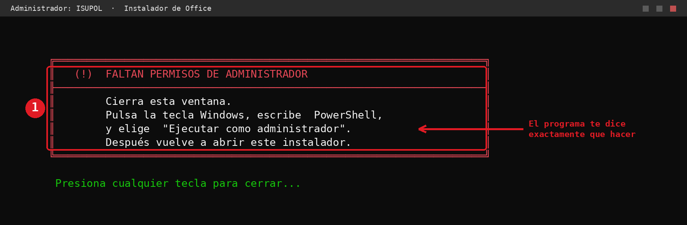
Figura 22. Así se ve el aviso cuando faltan permisos de administrador.
El propio programa te dice qué hacer; la flecha señala la instrucción.
7. Cuidado con la opción 7
La opción 7 borra Office del equipo. Para que
nadie la ejecute sin querer, aquí los números están al revés que en el resto del
programa: el 1 cancela y solo el 2 borra.
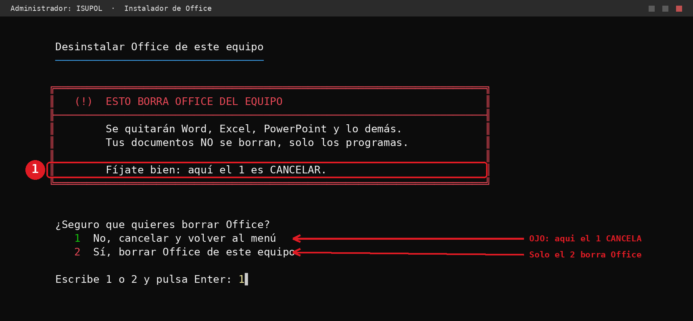
Figura 23. El recuadro avisa del cambio de orden. Las flechas señalan
cada opción: fíjate bien antes de escribir. Tus documentos no se borran, solo los
programas.
Resumen en una frase: enciendes el equipo → abres el navegador →
entras a github.com/MariaDSalazar/instalador-office-isupol → copias el comando →
abres PowerShell como administrador → clic derecho para pegar → Enter →
escribes el número de la versión (por ejemplo 3) → escribes 1 para confirmar →
esperas el cartel verde → escribes 5 para activar → escribes 1 para abrir MAS →
dentro de MAS escribes 2 → esperas la línea verde → escribes 0 para salir de MAS →
escribes 6 para comprobar → escribes 9 para salir. ¡Listo!
Recordatorio importante: este manual es para aprender y
practicar en un entorno de laboratorio. Activar productos para no pagar la licencia va
contra los términos de Microsoft. La idea es entender cómo funciona, con responsabilidad.
Bibliografía
Microsoft. (2024). Configuration options for the Office Deployment Tool. Microsoft Learn.
https://learn.microsoft.com/microsoft-365-apps/deploy/office-deployment-tool-configuration-options
Microsoft. (2025). Product IDs supported by the Office Deployment Tool for Click-to-Run. Microsoft Learn.
https://learn.microsoft.com/previous-versions/troubleshoot/microsoft-365/microsoft-365-apps/office-suite-problems/product-ids-supported-office-deployment-click-to-run
Microsoft. (2024). Overview of the Office Deployment Tool. Microsoft Learn.
https://learn.microsoft.com/microsoft-365-apps/deploy/overview-office-deployment-tool
Microsoft. (2024). Update channel for Office LTSC 2021. Microsoft Learn.
https://learn.microsoft.com/office/ltsc/2021/update
Massgrave. (2026). Microsoft Activation Scripts (MAS). https://massgrave.dev
Sobre las imágenes. Las pantallas del instalador, de PowerShell y
de MAS reproducen el texto literal de cada programa. Las figuras 2 y 3 (menú Inicio y aviso
de permisos) son recreaciones de las pantallas de Windows: pueden variar ligeramente según
la versión que tengas.
Manual de usuario paso a paso desde cero · Instalador de Office ISUPOL ·
Material educativo para practicar en un entorno de laboratorio.
El instalador descarga Office únicamente de los servidores oficiales de Microsoft
(officecdn.microsoft.com y c2rsetup.officeapps.live.com).